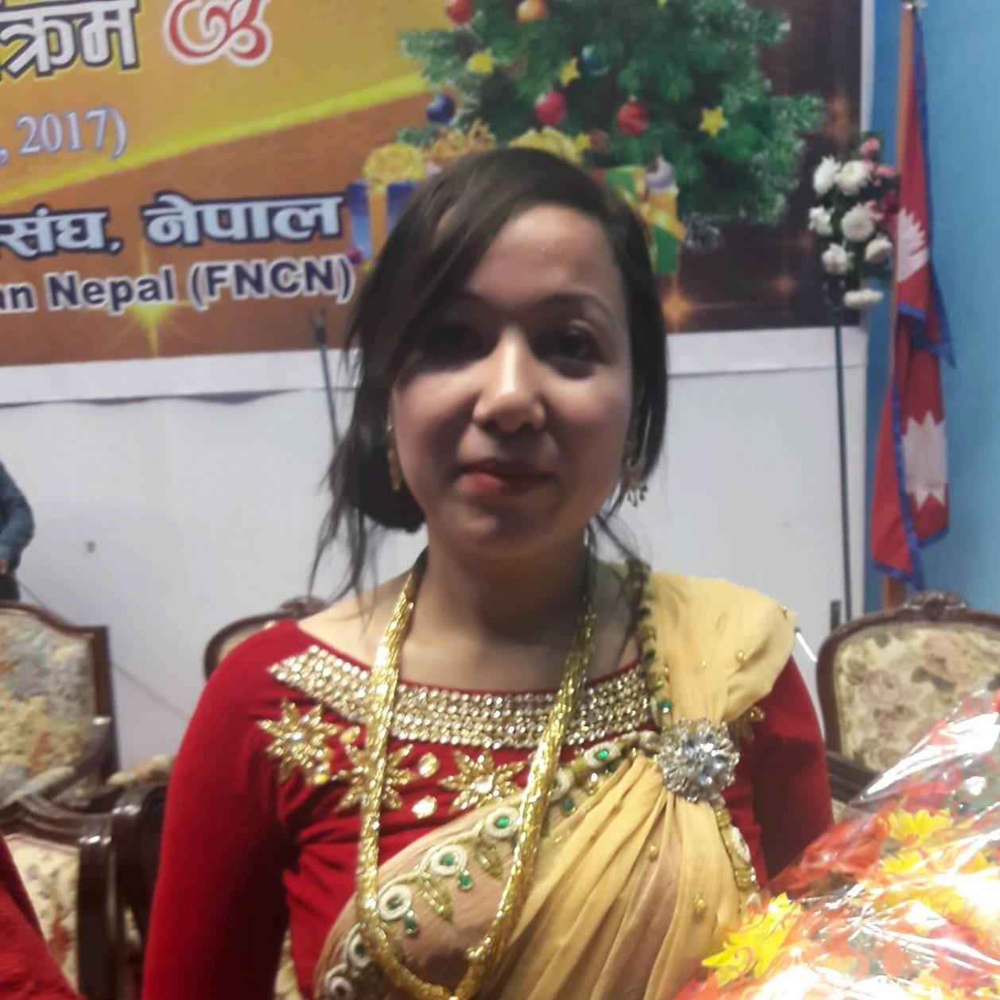
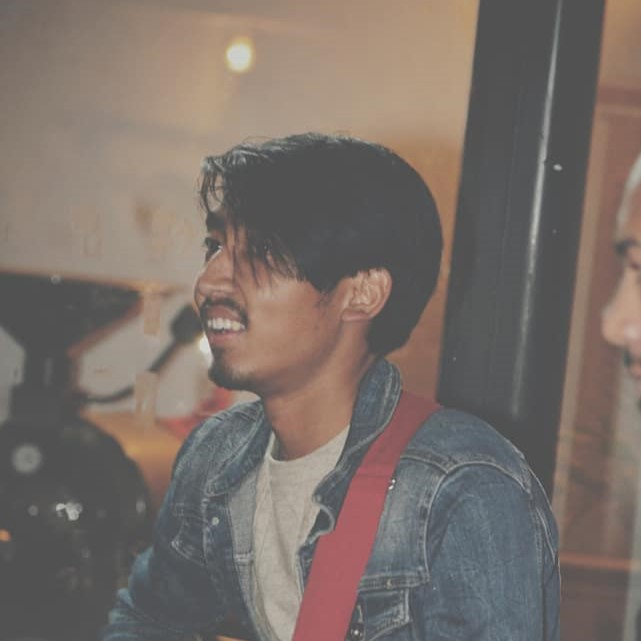

At Dharmikta Mandali, our leadership team works in unity to serve the body of Christ and spread God's love through faithful ministry.
Pastoral Team

Pastor Padam Nath Parajuli
Senior Pastor

Pastor Naya Kaji Shrestha
Associate Pastor

Pastor Rudra B.K.
Youth Pastor
Pooja Shrestha Parajuli
Women's Fellowship Chairman
Maya Shrestha
Prayer Fellowship Co-ordinator
Punam Shrestha B.K.
Children Fellowship Co-ordinator
Elders
David Shrestha
Elder / Worship Team
Kabita Giri
Elder / Worship Team
Deacons
John Shrestha
Deacon
Sagar Timalsina
Deacon
Bikash Gadal
Deacon
Preeti Shrestha
Deacon

Roshita K.C.
Deacon
Ashmita Bhujel
Deacon
Worship Team
Pratima Shrestha
Worship Team
Susma Rasaili
Worship Team

Prajal Deoju
Worship Team
Prashanna Parajuli
Worship Team
Binay Praja
Worship Team
Nitesh Bhujel
Worship Team